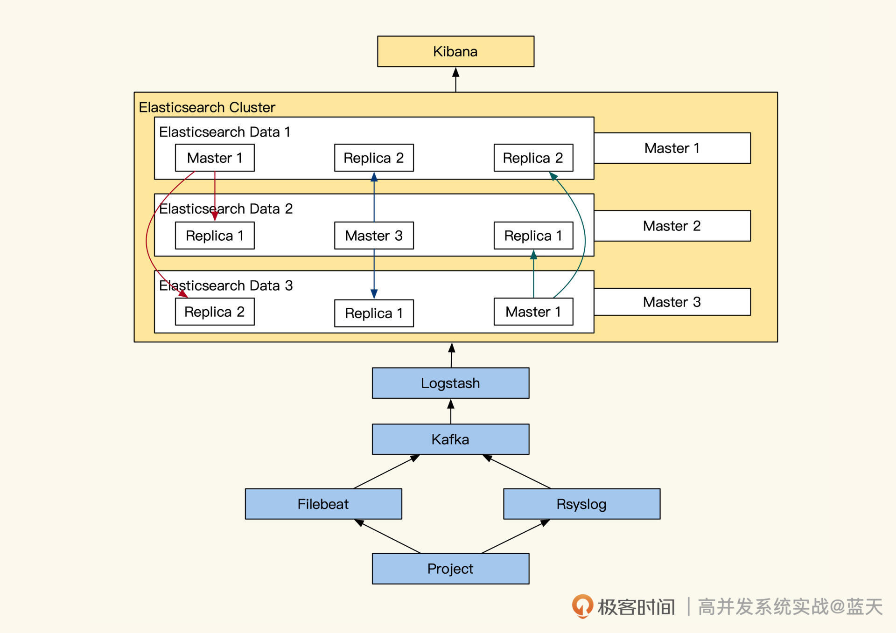
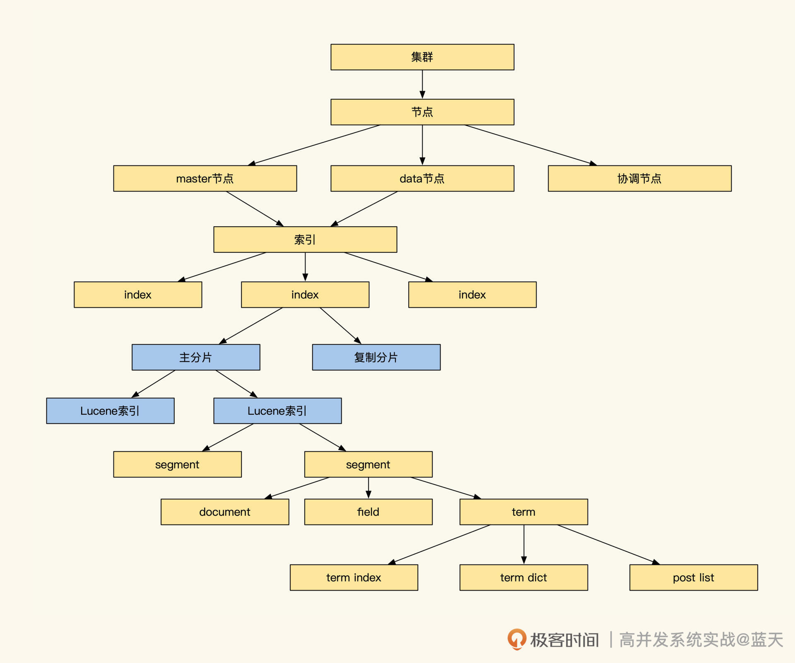
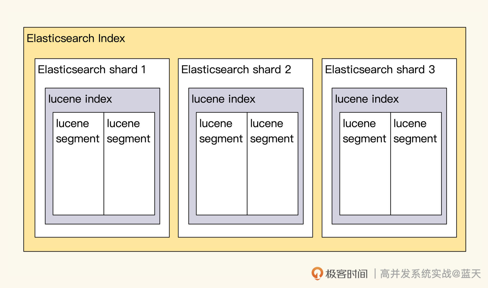
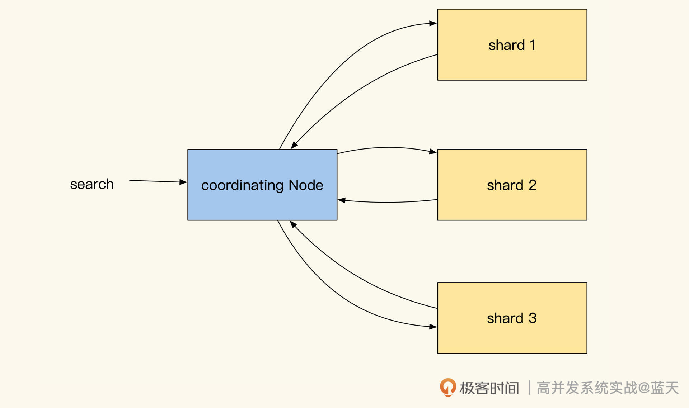
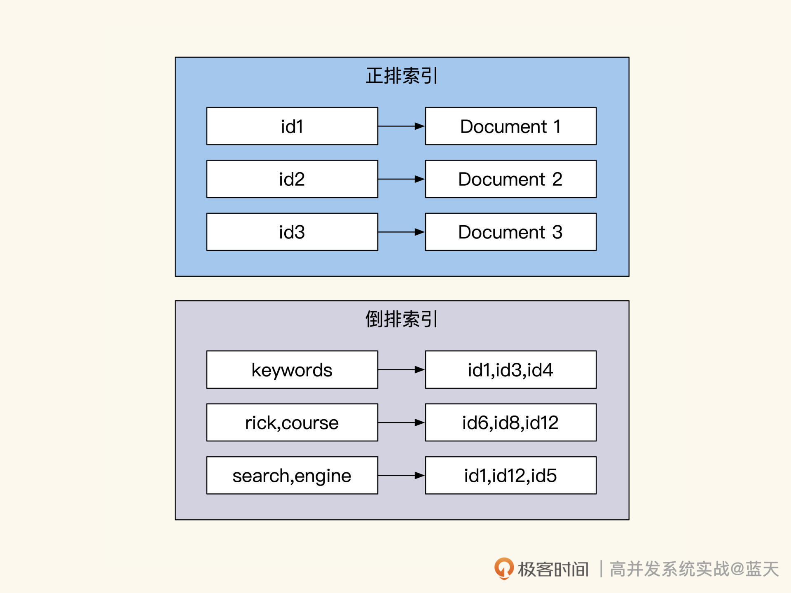
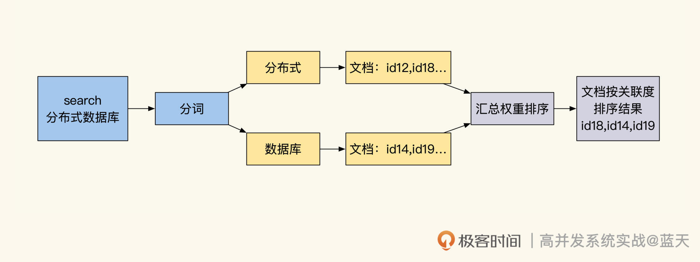
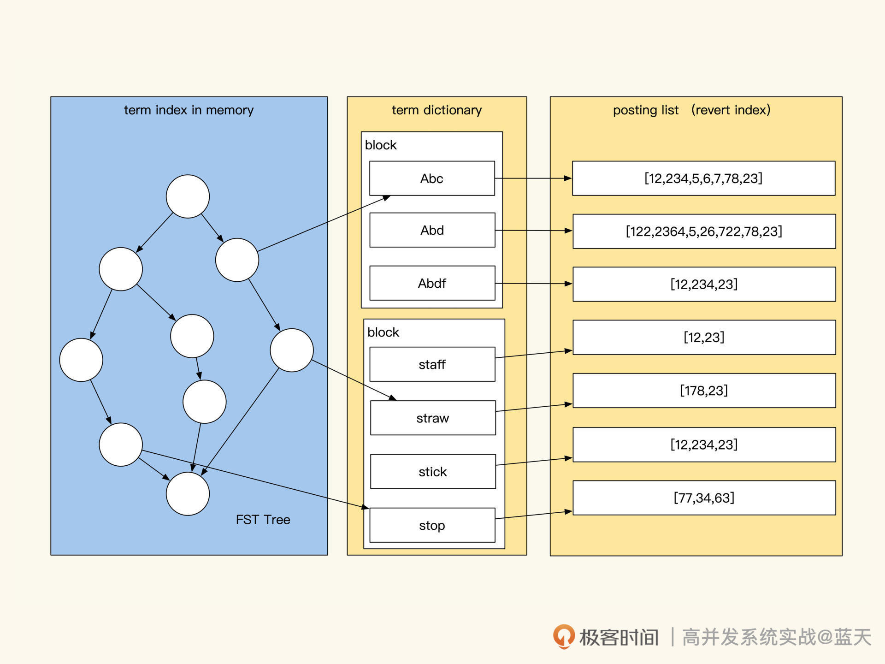

- 00 开篇词 高并发系统，技术实力的试金石.md.html
- 01 结构梳理：大并发下，你的数据库表可能成为性能隐患.md.html
- 02 缓存一致：读多写少时，如何解决数据更新缓存不同步？.md.html
- 03 Token：如何降低用户身份鉴权的流量压力？.md.html
- 04 同城双活：如何实现机房之间的数据同步？.md.html
- 05 共识Raft：如何保证多机房数据的一致性？.md.html
- 06 领域拆分：如何合理地拆分系统？.md.html
- 07 强一致锁：如何解决高并发下的库存争抢问题？.md.html
- 08 系统隔离：如何应对高并发流量冲击？.md.html
- 09 分布式事务：多服务的2PC、TCC都是怎么实现的？.md.html
- 10 稀疏索引：为什么高并发写不推荐关系数据库？.md.html
- 11 链路追踪：如何定制一个分布式链路跟踪系统 ？.md.html
- 12 引擎分片：Elasticsearch如何实现大数据检索？.md.html
- 13 实时统计：链路跟踪实时计算中的实用算法.md.html
- 14 跳数索引：后起新秀ClickHouse.md.html
- 15 实践方案：如何用C++自实现链路跟踪？.md.html
- 16 本地缓存：用本地缓存做服务会遇到哪些坑？.md.html
- 17 业务脚本：为什么说可编程订阅式缓存服务更有用？.md.html
- 18 流量拆分：如何通过架构设计缓解流量压力？.md.html
- 19 流量调度：DNS、全站加速及机房负载均衡.md.html
- 20 数据引擎：统一缓存数据平台.md.html
- 21 业务缓存：元数据服务如何实现？.md.html
- 22 存储成本：如何推算日志中心的实现成本？.md.html
- 23 网关编程：如何通过用户网关和缓存降低研发成本？.md.html
- 24 性能压测：压测不完善，效果减一半.md.html
- 答疑课堂 思考题答案（一）.md.html
- 结束语 为者常成，行者常至.md.html
- 捐赠
12 引擎分片：Elasticsearch如何实现大数据检索？
你好，我是徐长龙。
上节课我们看到了ELK对日志系统的强大支撑，如果没有它的帮助，我们自己实现分布式链路跟踪其实是十分困难的。
为什么ELK功能这么强大？这需要我们了解ELK中储存、索引等关键技术点的架构实现才能想清楚。相信你学完今天的内容，你对大数据分布式的核心实现以及大数据分布式统计服务，都会有更深入的理解。
Elasticsearch架构
那么ELK是如何运作的？它为什么能够承接如此大的日志量？
我们先分析分析ELK的架构长什么样，事实上，它和OLAP及OLTP的实现区别很大，我们一起来看看。Elasticsearch架构如下图：

我们对照架构图，梳理一下整体的数据流向，可以看到，我们项目产生的日志，会通过Filebeat或Rsyslog收集将日志推送到Kafka内。然后由LogStash消费Kafka内的日志、对日志进行整理，并推送到ElasticSearch集群内。
接着，日志会被分词，然后计算出在文档的权重后，放入索引中供查询检索， Elasticsearch会将这些信息推送到不同的分片。每个分片都会有多个副本，数据写入时，只有大部分副本写入成功了，主分片才会对索引进行落地（需要你回忆下分布式写一致知识）。
Elasticsearch集群中服务分多个角色，我带你简单了解一下：
- Master节点：负责集群内调度决策，集群状态、节点信息、索引映射、分片信息、路由信息，Master真正主节点是通过选举诞生的，一般一个集群内至少要有三个Master可竞选成员，防止主节点损坏（回忆下之前Raft知识，不过Elasticsearch刚出那会儿还没有Raft标准）。
- Data存储节点：用于存储数据及计算，分片的主从副本，热点节点，冷数据节点；
- Client协调节点：协调多个副本数据查询服务，聚合各个副本的返回结果，返回给客户端；
- Kibana计算节点：作用是实时统计分析、聚合分析统计数据、图形聚合展示。
实际安装生产环境时，Elasticsearch最少需要三台服务器，三台中有一台会成为Master节点负责调配集群内索引及资源的分配，而另外两个节点会用于Data数据存储、数据检索计算，当Master出现故障时，子节点会选出一个替代故障的Master节点（回忆下分布式共识算法中的选举）。
如果我们的硬件资源充裕，我们可以另外增加一台服务器将Kibana计算独立部署，这样会获得更好的数据统计分析性能。如果我们的日志写入过慢，可以再加一台服务器用于Logstash分词，协助加快ELK整体入库的速度。
要知道最近这几年大部分云厂商提供的日志服务都是基于ELK实现的，Elasticsearch已经上市，可见其市场价值。
Elasticsearch的写存储机制
下图是Elasticsearch的索引存储具体的结构，看起来很庞大，但是别担心，我们只需要关注分片及索引部分即可：

我们再持续深挖一下，Elasticsearch是如何实现分布式全文检索服务的写存储的。其底层全文检索使用的是Lucene引擎，事实上这个引擎是单机嵌入式的，并不支持分布式，分布式功能是基础分片来实现的。
为了提高写效率，常见分布式系统都会先将数据先写在缓存，当数据积累到一定程度后，再将缓存中的数据顺序刷入磁盘。Lucene也使用了类似的机制，将写入的数据保存在Index Buffer中，周期性地将这些数据落盘到segment文件。
再来说说存储方面，Lucene为了让数据能够更快被查到，基本一秒会生成一个segment文件，这会导致文件很多、索引很分散。而检索时需要对多个segment进行遍历，如果segment数量过多会影响查询效率，为此，Lucene会定期在后台对多个segment进行合并。
更多索引细节，我稍后再给你介绍，可以看到Elasticsearch是一个IO频繁的服务，将新数据放在SSD上能够提高其工作效率。
但是SSD很昂贵，为此Elasticsearch实现了冷热数据分离。我们可以将热数据保存在高性能SSD，冷数据放在大容量磁盘中。
同时官方推荐我们按天建立索引，当我们的存储数据量达到一定程度时，Elasticsearch会把一些不经常读取的索引挪到冷数据区，以此提高数据存储的性价比。而且我建议你创建索引时按天创建索引，这样查询时。我们可以通过时间范围来降低扫描数据量。

另外，Elasticsearch服务为了保证读写性能可扩容，Elasticsearch对数据做了分片，分片的路由规则默认是通过日志DocId做hash来保证数据分布均衡，常见分布式系统都是通过分片来实现读写性能的线性提升。
你可以这样理解：单个节点达到性能上限，就需要增加Data服务器节点及副本数来降低写压力。但是，副本加到一定程度，由于写强一致性问题反而会让写性能下降。具体加多少更好呢？这需要你用生产日志实测，才能确定具体数值。
Elasticsearch的两次查询
前面提到多节点及多分片能够提高系统的写性能，但是这会让数据分散在多个Data节点当中，Elasticsearch并不知道我们要找的文档，到底保存在哪个分片的哪个segment文件中。
所以,为了均衡各个数据节点的性能压力，Elasticsearch每次查询都是请求所有索引所在的Data节点，查询请求时协调节点会在相同数据分片多个副本中，随机选出一个节点发送查询请求，从而实现负载均衡。
而收到请求的副本会根据关键词权重对结果先进行一次排序，当协调节点拿到所有副本返回的文档ID列表后，会再次对结果汇总排序，最后才会用 DocId去各个副本Fetch具体的文档数据将结果返回。
可以说，Elasticsearch通过这个方式实现了所有分片的大数据集的全文检索，但这种方式也同时加大了Elasticsearch对数据查询请求的耗时。下图是协调节点和副本的通讯过程：

除了耗时，这个方式还有很多缺点，比如查询QPS低；网络吞吐性能不高；协助节点需要每次查询结果做分页；分页后，如果我们想查询靠后的页面，要等每个节点先搜索和排序好该页之前的所有数据，才能响应，而且翻页跨度越大，查询就越慢……
为此，ES限制默认返回的结果最多1w条，这个限制也提醒了我们不能将Elasticsearch的服务当作数据库去用。
还有一点实践的注意事项，这种实现方式也导致了小概率个别日志由于权重太低查不到的问题。为此，ES提供了search_type=dfs_query_then_fetch参数来应对特殊情况，但是这种方式损耗系统资源严重，非必要不建议开启。
除此之外，Elasticsearch的查询有query and fetch、dfs query and fetch、dfs query then fetch三种，不过它们和这节课主线关联不大，有兴趣的话你可以课后自己了解一下。
Elasticsearch的倒排索引
我们再谈谈Elasticsearch的全文检索的倒排索引。
Elasticsearch支持多种查询方式不仅仅是全文检索，如数值类使用的是BKD Tree，Elasticsearch的全文检索查询是通过Lucene实现的，索引的实现原理和OLAP的LSM及OLTP的B+Tree完全不同，它使用的是倒排索引（Inverted Index）。


一般来说，倒排索引常在搜索引擎内做全文检索使用，其不同于关系数据库中的B+Tree和B-Tree 。B+Tree和B-Tree 索引是从树根往下按左前缀方式来递减缩小查询范围，而倒排索引的过程可以大致分四个步骤：分词、取出相关DocId、计算权重并重新排序、展示高相关度的记录。
首先，对用户输入的内容做分词，找出关键词；然后，通过多个关键词对应的倒排索引，取出所有相关的DocId；接下来，将多个关键词设计索引ID做交集后，再根据关键词在每个文档的出现次数及频率，以此计算出每条结果的权重，进而给列表排序，并实现基于查询匹配度的评分；然后就可以根据匹配评分来降序排序，列出相关度高的记录。
下面，我们简单看一下Lucene具体实现。

如上图，Elasticsearch集群的索引保存在Lucene的segment文件中，segment文件格式相关信息你可以参考 segment格式，其中包括行存、列存、倒排索引。
为了节省空间和提高查询效率，Lucene对关键字倒排索引做了大量优化，segment主要保存了三种索引：
- Term Index（单词词典索引）：用于关键词（Term）快速搜索，Term index是基础Trie树改进的FST（Finite State Transducer有限状态传感器，占用内存少）实现的二级索引。平时这个树会放在内存中，用于减少磁盘IO加快Term查找速度，检索时会通过FST快速找到Term Dictionary对应的词典文件block。
- Term Dictionary（单词词典）：单词词典索引中保存的是单词（Term）与Posting List的关系，而这个单词词典数据会按block在磁盘中排序压缩保存，相比B-Tree更节省空间，其中保存了单词的前缀后缀，可以用于近似词及相似词查询，通过这个词典可以找到相关的倒排索引列表位置。
- Posting List（倒排列表）：倒排列表记录了关键词Term出现的文档ID，以及其所在文档中位置、偏移、词频信息，这是我们查找的最终文档列表，我们拿到这些就可以拿去排序合并了。
一条日志在入库时，它的具体内容并不会被真实保存在倒排索引中。
在日志入库之前，会先进行分词，过滤掉无用符号等分隔词，找出文档中每个关键词（Term）在文档中的位置及频率权重；然后，将这些关键词保存在Term Index以及Term Dictionary内；最后，将每个关键词对应的文档ID和权重、位置等信息排序合并到Posting List中进行保存。通过上述三个结构就实现了一个优化磁盘IO的倒排索引。
而查询时，Elasticsearch会将用户输入的关键字通过分词解析出来，在内存中的Term Index单词索引查找到对应Term Dictionary字典的索引所在磁盘的block。接着，由Term Dictionary找到对关键词对应的所有相关文档DocId及权重，并根据保存的信息和权重算法对查询结果进行排序返回结果。
总结
不得不感叹，Elasticsearch通过组合一片片小Lucene的服务，就实现了大型分布式数据的全文检索。这无论放到当时还是现在，都很不可思议。可以说了，Elasticsearch 几乎垄断了所有日志实时分析、监控、存储、查找、统计的市场，其中用到的技术有很多地方可圈可点。
现在市面上新生代开源虽然很多，但是论完善性和多样性，能够彻底形成平台性支撑的开源仍然很少见。而Elasticsearch本身是一个十分庞大的分布式检索分析系统，它对数据的写入和查询做了大量的优化。
我希望你关注的是，Elasticsearch用到了大量分布式设计思路和有趣的算法，比如：分布式共识算法（那时还没有Raft）、倒排索引、词权重、匹配权重、分词、异步同步、数据一致性检测等。这些行业中的优秀设计，值得我们做拓展了解，推荐你课后自行探索。
思考题
如果让你实现一个Elasticsearch，你觉得需要先解决的核心功能是什么？
欢迎你在评论区与我交流讨论，我们下节课见！
© 2019 - 2023 Liangliang Lee. Powered by gin and hexo-theme-book.